SynthFair: A Semi-Synthetic Medical Imaging Dataset to Propel Research on Bias Detection & Mitigation
Introduction
This research aims to create a high-quality semi-synthetic chest X-ray dataset designed to improve overall model performance and fairness. By generating controlled demographic variations of existing medical images, we seek to address representation imbalances and enable better bias detection and mitigation in medical imaging models.
Synthetic Generation
We first extracted demographic attributes (sex, race, and age) and clinical findings from each sample in the original dataset to construct a structured textual description. This text serves a dual purpose: it functions as a comprehensive image descriptor and acts as a conditioning prompt for generative models utilizing text encoders. Hereafter, we refer to this description as the “image prompt,” noting that it represents the semantic basis for generation even when not strictly used as a direct input for all architectures.
To generate specific variations, we applied interventions to the original prompts, modifying one attribute at a time. Adopting the notation of causal intervention, these shifts are denoted as do(attribute=value). Examples of these shifts can be seen in Figure 1. This approach yields five distinct variation groups (three for race and two for sex). For each target variation, we aimed to generate 1,000 synthetic images. Crucially, the source images for these generations were sampled exclusively from groups disjoint from the target class, ensuring that all synthetic outputs represent a true modification of the original demographic attribute.
The fidelity of the generated images was assessed using three independent classifiers, one for each demographic attribute [1]. A synthetic image is considered successfully generated only if it satisfies two conditions: (1) the target intervention is correctly predicted, and (2) all non-intervened attributes remain consistent with the original image. If any attribute fails this check, the generation is retried up to three times. If the prediction fails after three attempts, the prompt is discarded. This validation process is referred to as the Attribute Check module. Consequently, the final dataset size depends on the acceptance rate of this validation step, with a theoretical maximum of 5,000 images (5 groups × 1k samples). We evaluated this pipeline across three generative architectures: a Variational Autoencoder (VAE) producing counterfactuals [2], a diffusion model fine-tuned on MIMIC-CXR (Roentgenv2 [3]), and a DDIM inversion scheme applied to the counterfactual version of the latter [4]. An overview of the pipeline used in this work can be seen below.
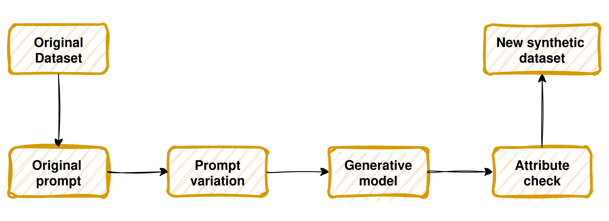
VAE
To generate high-fidelity counterfactual images, we based the generation on Deep Structural Causal Models (DSCM). Unlike traditional approaches that only learn the statistical distribution of data, this model explicitly defines the causal relationships between demographic attributes (causes) and the medical image (effect) through a Structural Causal Model (SCM).
The core architecture for the image component is a Hierarchical Variational Autoencoder (HVAE) (Figure 2). We selected this architecture for its ability to compress the image into a probabilistic latent space, allowing us to disentangle the semantic attributes from the specific visual details of the patient.
To generate a variation of an image while preserving the patient’s unique identity, we utilize Pearl’s three-step ladder of causation (Figure 3). This process ensures that only the target attribute is modified, while the rest of the image’s content remains consistent. The process is defined as follows:
Abduction (Inferring the specific context): The model takes the original image X and passes it through the VAE encoder. The goal is to infer the posterior distribution of the exogenous noise u. In simpler terms, the model captures all the unique characteristics of the patient (such as bone structure, posture, or specific anatomical details) that are not explained by the demographic attributes. This noise represents the patient’s visual identity.
Action (The intervention): We perform a causal intervention on the graph, denoted as do(A=a'). This step mathematically breaks the dependence on the original attribute, allowing us to simulate a hypothetical scenario.
Prediction (Generating the counterfactual): Finally, the VAE decoder generates a new image X^* using the intervention defined in the action step, but combined with the original exogenous noise u recovered during the abduction step. By reusing the original noise, the model ensures that the resulting image retains the specific anatomy and details of the original patient, changing only the visual features causally linked to the intervened attribute.
An example of different counterfactuals generated from the same original image can be seen below.
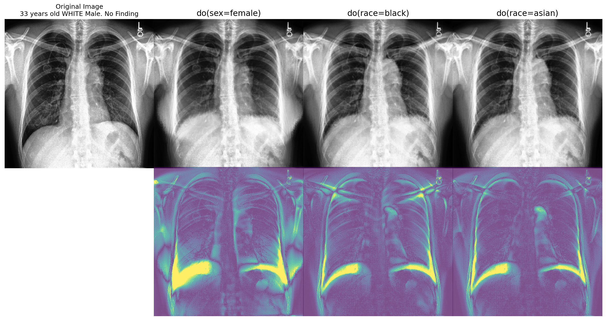


The model generates images at a low 192×192 resolution, while the demographic classifiers used for validation work at higher resolutions (299×299 and 320×320). This resolution mismatch means that the generated images from the HVAE model must undergo an upscaling process before the attribute check. To analyze whether these classifiers are sensitive to this resolution change, and to determine whether upscaling could potentially degrade image quality or classifier performance, we tested different types of upscaling before the attribute check, modifying the original pipeline as shown below.
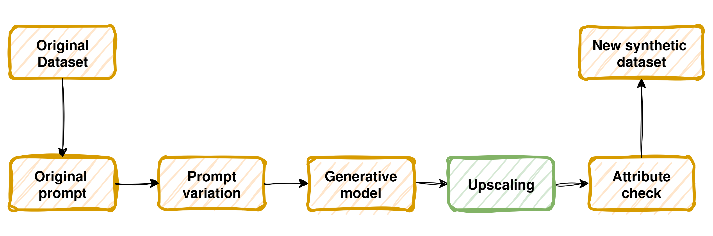
First, we applied simple upscaling using LANCZOS interpolation to 512×512 resolution (the same resolution that the Roentgenv2 diffusion model uses), followed by a 3× super-resolution upscaling to 576×576 using the EDSR model [5].
Attribute Check
As noted before, the attribute check consists of three independent models trained for sex and race classification and age regression. In this module of the pipeline, a generated image goes through each model obtaining a prediction for the three attributes. One of these attributes is the one that is being shifted (denoted as target group). If all three attributes are predicted correctly on the synthetic image then it will be part of the new dataset and it will count toward the percentage passed attribute check. In Figure 4 the attribute check results for each target group are shown for the VAE model and the different types of upscaling and for images generated from CheXpert [6] and MIMIC-CXR [7] metadata.
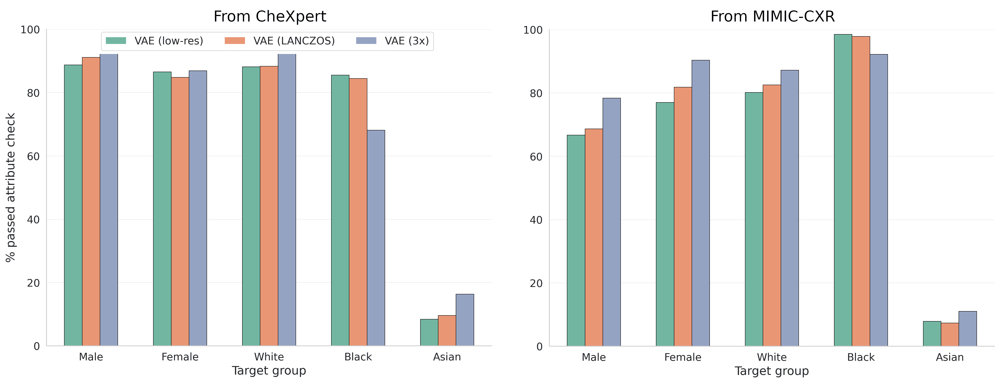
Image Quality
Even though the attribute check validation is a necessary process to ensure that the generated images follow the desired attributes, it does not clarify the quality of those generated images. For this reason, we computed the Fréchet Distance [8] for each group using Inceptionv3 [9] and RadDINO [10] latent space representations (Figure 5). This metric provides a more realistic measure of how similar the synthetic distributions are to the original distribution. The distance in the Inceptionv3 embeddings represents general characteristics of the images, as this model was trained on general images. On the other hand, the distance in the RadDINO embeddings reflects the quality of the images in terms of medical imaging characteristics.
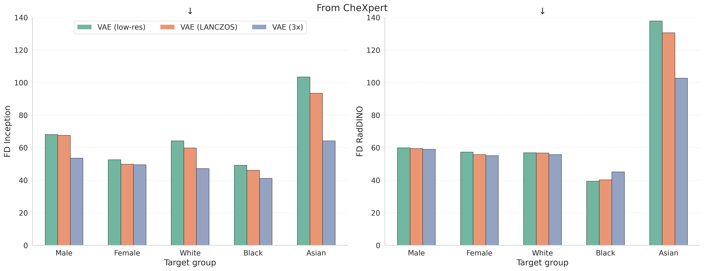
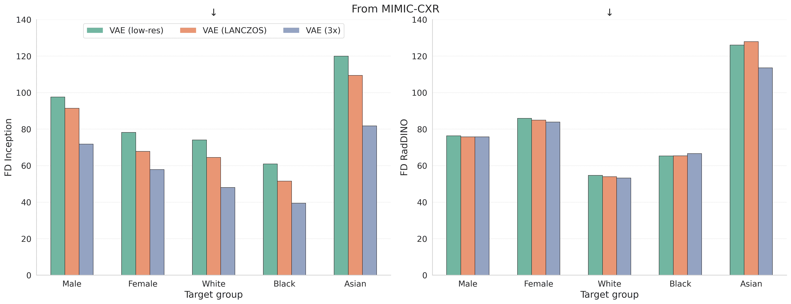
Based on these results, we concluded that upscaling the images is worthwhile and demonstrated that the VAE model produces high-quality images that can be upscaled without degrading their quality. The super-resolution approach using EDSR particularly improves the attribute check success rate while maintaining strong distributional alignment with the original dataset. The UMAP visualizations (Figure 6) confirm that VAE-generated images occupy similar regions in the latent space as real images, indicating that the counterfactuals preserve realistic medical imaging characteristics.
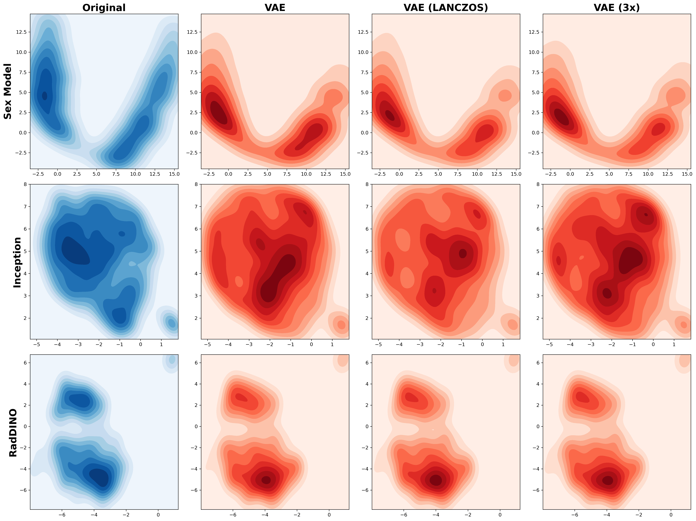
Diffusion
Differing from the VAE model where we applied direct counterfactuals to the original image, in this approach we focus on generating images by random sampling from noise. For this, we use the Roentgenv2 model that was trained specifically for medical image generation by fine-tuning Stable Diffusion with samples from MIMIC-CXR. The architecture of this model can be seen in Figure 7.

Every image is generated by random sampling from noise, with the generation process primarily driven by the text prompt. This means that only the metadata from the original dataset is used, not the image itself. Multiple generations with the same prompt can produce different final states, resulting in diverse new images. As can be seen in the synthetic examples in Figure 8, the generated images are completely different from the original image since the original is not used during the generative process, resulting in very significant visual differences.
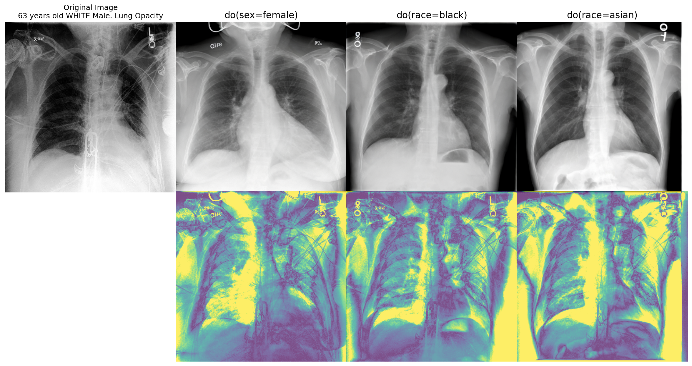
Attribute Check
The attribute check validation results show that the VAE-generated images have an overall higher success rate (Figure 9). The most significant discrepancy comes from the Asian target group, where the VAE struggles more than the diffusion model. It is worth noticing that even though the Roentgenv2 model was trained using the MIMIC-CXR images, it has a lower success rate on this dataset than the VAE model. This suggests that the latter model has better generalization for image generation.
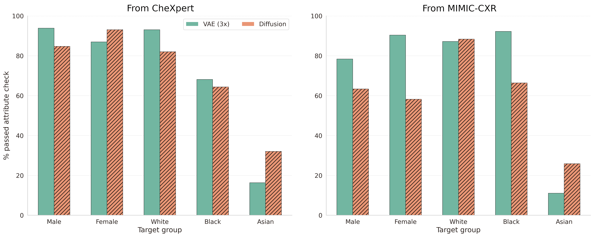
Image Quality
By looking at the Fréchet distances (Figure 10), we further understand the differences between both generative models. The VAE model is far more accurate in terms of these distances, generating more reliable and realistic images than the Roentgenv2 model. These high distance values presented by the diffusion model can be explained by the possibility of hallucinations that the diffusion process has, as can be shown in the examples in Figure 11. These are images that were generated by the Roentgenv2 model and, more concerning, successfully passed the attribute check validation.
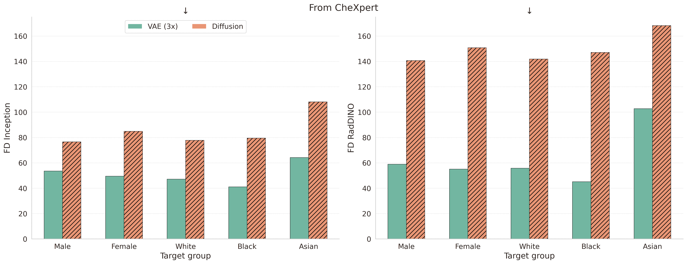
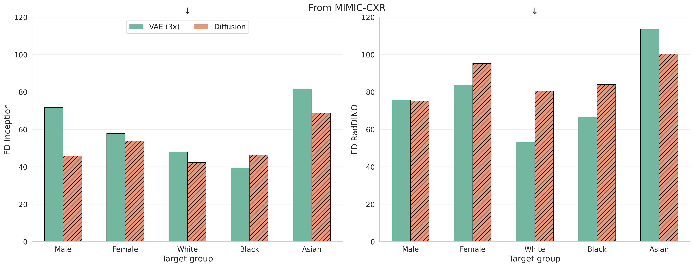
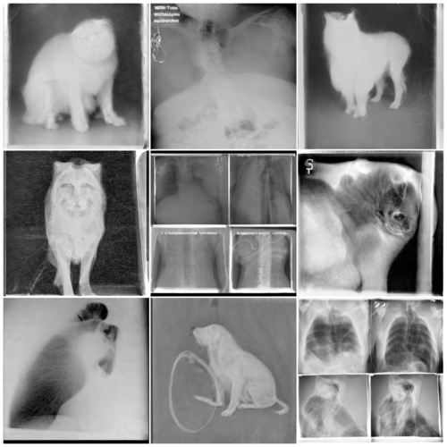
The UMAP projections of the diffusion-generated images show how limited the representation can be compared to the VAE-generated images (Figure 12).
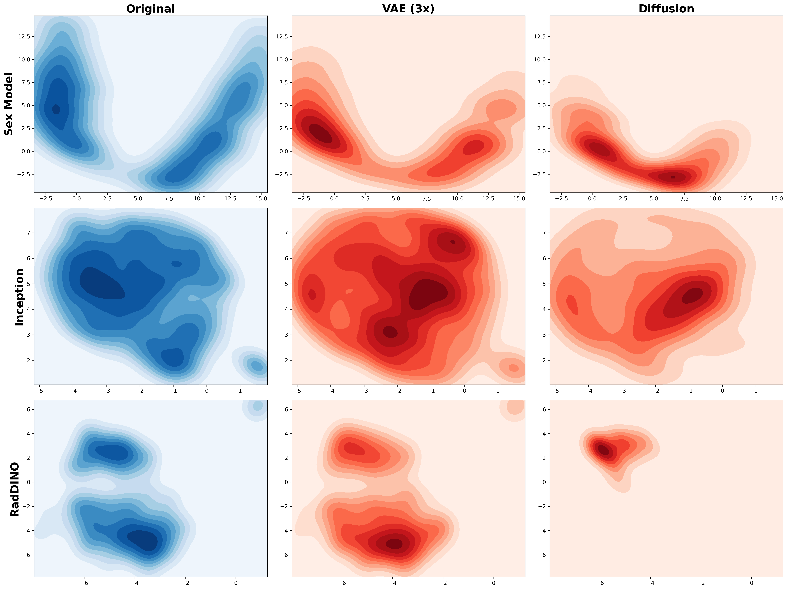
DDIM
While the Roentgenv2 diffusion model generates images through random sampling from noise, losing the connection to the original image structure, the DDIM (Denoising Diffusion Implicit Models) inversion approach offers a middle ground that combines the high visual fidelity of the diffusion model with the counterfactual nature of the VAE approach. This method enables us to generate variations that preserve more structural information from the original image while still leveraging the powerful generative capabilities of the Roentgenv2 model.
The DDIM inversion process works in two main stages:
Inversion (Encoding to latent noise): Starting from a real image X from the original dataset, we reverse the diffusion process to obtain a latent noise representation z_0. Unlike standard diffusion sampling that starts from pure random noise, DDIM inversion uses a deterministic process to trace back the specific noise configuration that would have generated an image similar to the input. This step essentially encodes the structural and anatomical information of the original patient into the latent space. The inversion is performed using the original image prompt (with the unmodified demographic attributes) to guide the reverse process.
Conditional generation (Decoding with intervention): Once we have the inverted latent representation z_0, we perform the forward diffusion sampling process, but now using a modified prompt with the intervened attribute, denoted as
do(attribute=value'). The key insight is that by starting from the inverted noise rather than random noise, the generation process preserves the overall anatomical structure and specific patient characteristics from the original image, while the modified prompt guides the model to alter only the visual features associated with the target demographic attribute.
This approach offers several advantages over pure random sampling: the generated counterfactuals maintain stronger anatomical coherence with the source image, preserve patient-specific details unrelated to the intervened attribute, and produce more consistent counterfactuals across different intervention attempts. However, the quality and faithfulness of the counterfactuals depend critically on two hyperparameters: the number of inversion steps and the classifier-free guidance scale, which controls the strength of the text conditioning during generation.
We evaluated different configurations of these parameters to find the optimal balance between preserving the original image structure and successfully implementing the demographic intervention. The DDIM approach produces counterfactuals that are visually closer to the original image compared to random sampling, while still achieving successful attribute transformations. As shown in Figure 13, different guidance scales (7.5 vs 15.5) produce different levels of attribute modification, with higher values creating more pronounced changes.
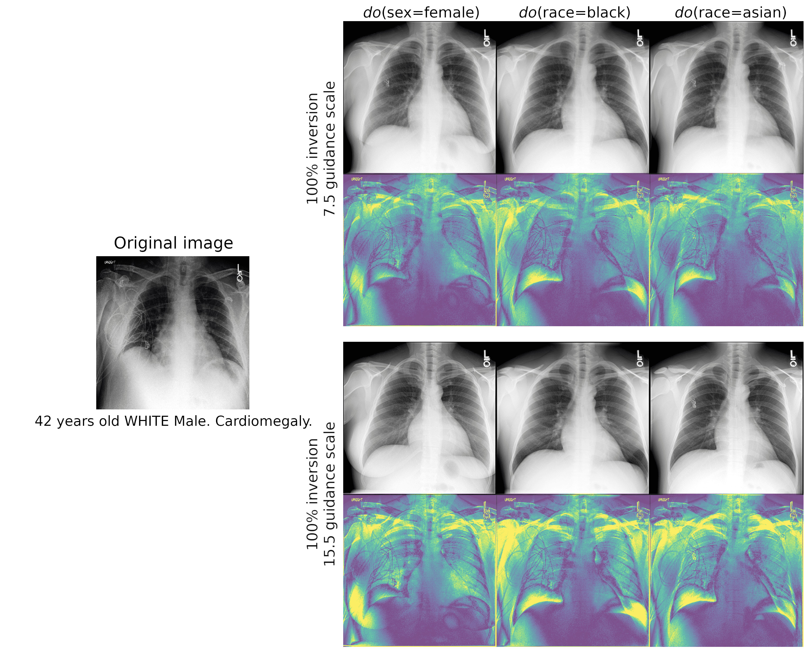
Attribute Check
The results in Figure 14 show that the DDIM process has a more equal success rate across the different groups, but overall is lower than for VAE and Diffusion models. It is worth noticing that it was the best-performing model on the Asian target group.
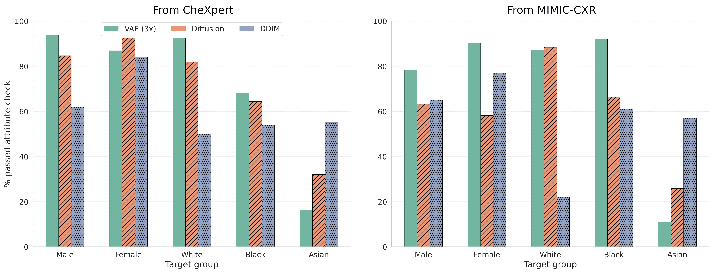
Image Quality
The Fréchet distance results (Figure 15) demonstrate that DDIM achieves intermediate performance between VAE and pure diffusion sampling. While not matching the VAE’s distributional alignment, DDIM substantially improves upon random diffusion sampling by leveraging the original image structure through inversion. The UMAP visualizations (Figure 16) further illustrate how DDIM-generated images occupy an intermediate position in the latent space, showing better overlap with real images than diffusion sampling but slightly less than VAE counterfactuals.
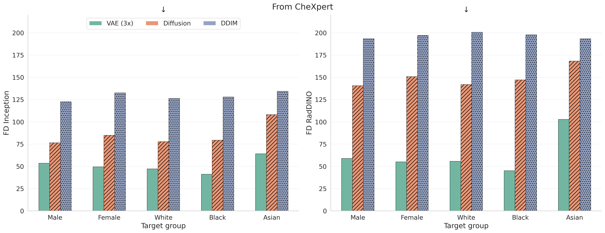
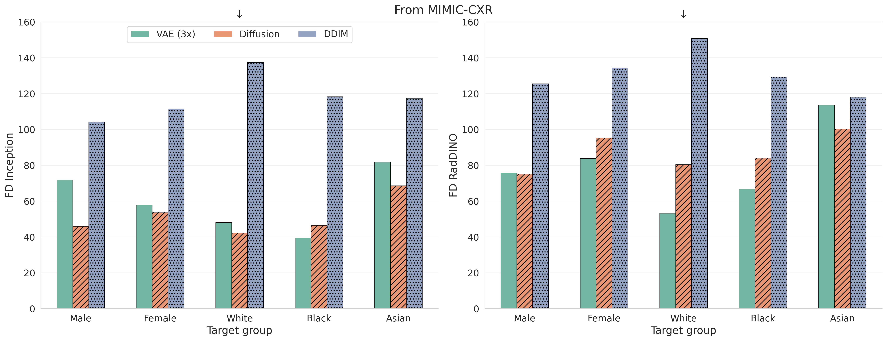
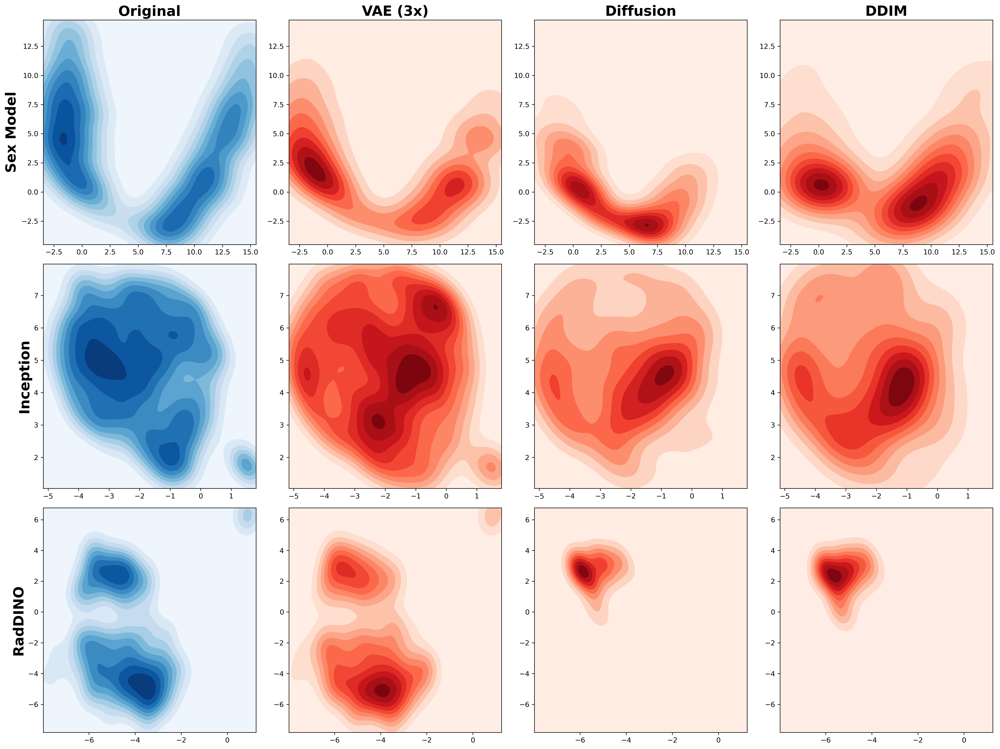
References
[1] Cohen, Joseph Paul, et al. “TorchXRayVision: A library of chest X-ray datasets and models.” arXiv, 2021, https://arxiv.org/abs/2111.00595.
[2] Ribeiro, Fabio De Sousa, et al. “High Fidelity Image Counterfactuals with Probabilistic Causal Models.” arXiv, 2023, https://arxiv.org/abs/2306.15764.
[3] Moroianu, Stefania L., et al. “Improving Performance, Robustness, and Fairness of Radiographic AI Models with Finely-Controllable Synthetic Data.” arXiv, 2025, https://arxiv.org/abs/2508.16783.
[4] Song, Jiaming, et al. “Denoising Diffusion Implicit Models.” arXiv, 2022, https://arxiv.org/abs/2010.02502.
[5] Lim, Bee, et al. “Enhanced Deep Residual Networks for Single Image Super-Resolution.” arXiv, 2017, https://arxiv.org/abs/1707.02921.
[6] Irvin, Jeremy, et al. “CheXpert: A Large Chest Radiograph Dataset with Uncertainty Labels and Expert Comparison.” arXiv, 2019, https://arxiv.org/abs/1901.07031.
[7] Johnson, A. E. W., et al. “MIMIC-CXR, a De-identified Publicly Available Database of Chest Radiographs with Free-text Reports.” Scientific Data, vol. 6, 2019, https://doi.org/10.1038/s41597-019-0322-0.
[8] Heusel, Martin, et al. “GANs Trained by a Two Time-Scale Update Rule Converge to a Local Nash Equilibrium.” arXiv, 2018, https://arxiv.org/abs/1706.08500.
[9] Szegedy, Christian, et al. “Rethinking the Inception Architecture for Computer Vision.” arXiv, 2015, https://arxiv.org/abs/1512.00567.
[10] Pérez-García, F., et al. “Exploring Scalable Medical Image Encoders Beyond Text Supervision.” Nature Machine Intelligence, vol. 7, 2025, pp. 119-130, https://doi.org/10.1038/s42256-024-00965-w.